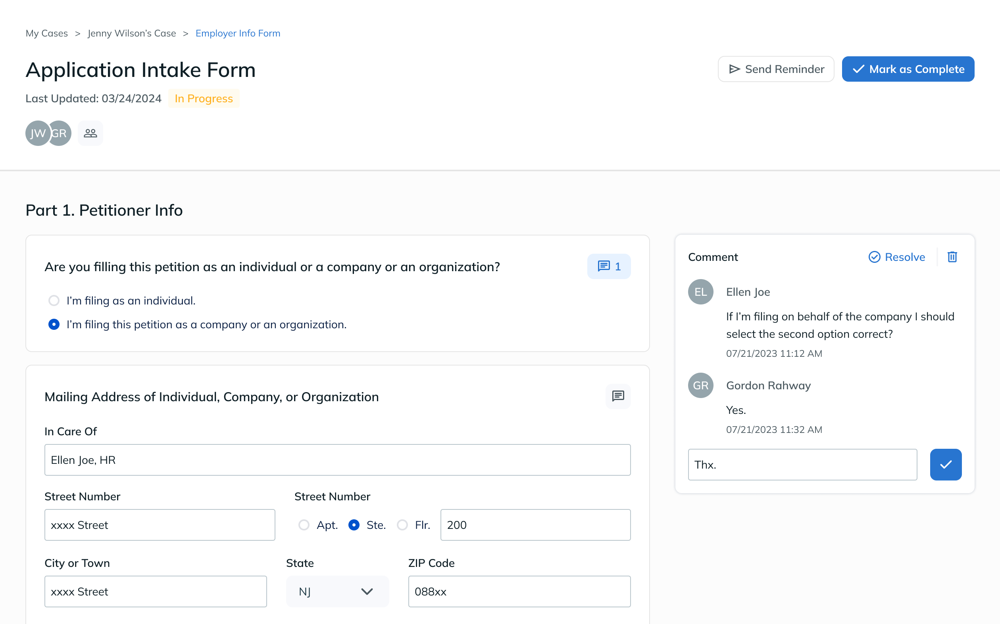

Selected
Case Studies
22' - Present

DRILL 2.0: Mock Interviews
Redesign the mock interview experience to increase user engagement and immersion
Interview Prep | Web App

Fileworks
Accelerated document preparation and case management for corporate lawyers
Legaltech MVP | Web App

BeaconFire HR
Streamlining the employee management for the company HR team
Internal Tool | Web App

GOdeals
Explore local cuisines for less with the order-for-pickup cuisine marketplace.
RestTech | Mobile App